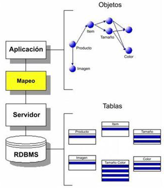
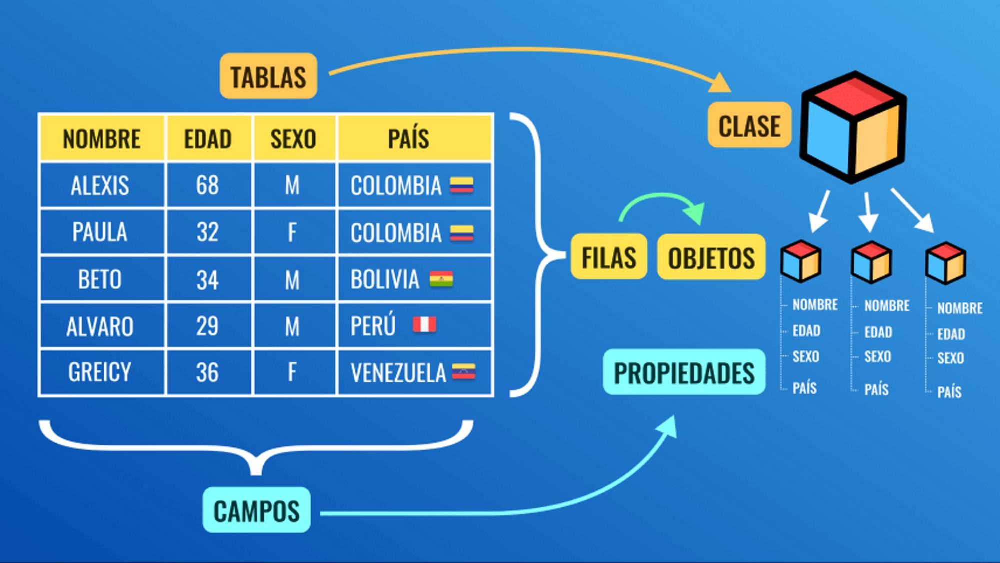

El mapeo objeto-relacional (más conocido por su nombre en inglés, Object-Relational mapping, o sus siglas O/RM, ORM, y O/R mapping) es una técnica de programación para convertir datos entre el sistema de tipos utilizado en un lenguaje de programación orientado a objetos y la utilización de una base de datos relacional como motor de persistencia.
En la práctica esto crea una base de datos orientada a objetos virtual, sobre la base de datos relacional. Esto posibilita el uso de las características propias de la orientación a objetos (básicamente herencia y polimorfismo). Hay paquetes comerciales y de uso libre disponibles que desarrollan el mapeo relacional de objetos, aunque algunos programadores prefieren crear sus propias herramientas ORM.

Fuente: Tesis Previa a la Obtención del Título de Ingeniera en Sistemas Computacionales. Tatiana Alexandra Freire Reyes
Para llevar a cabo la persistencia se produce un mapeo entre tablas y clases; filas y objetos; y campos y propiedades.

Fuente: EDTeam